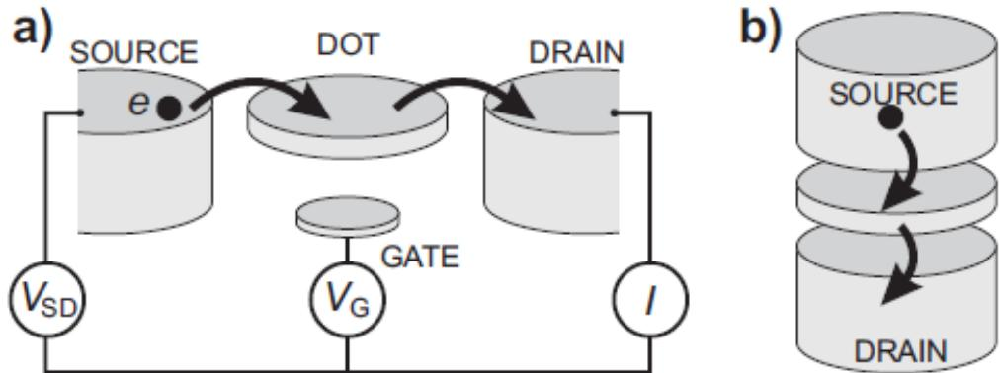

物理图像
二维载流子气（two-dimensional carrier gas，2DCG）是GaAs/AlGaAs、Si/SiGe、应变锗等异质结以及Si-MOS、Ge/Si 纳米线锗棚顶线中共有的电子态：在一维方向（生长方向 ）上载流子被量子阱限域为分立的子带，在与 垂直的 平面内则拥有近自由的连续色散，于是运动自由度从三维降至二维。当载流子为电子时称为二维电子气（2DEG，two-dimensional electron gas），为空穴时称为二维空穴气（2DHG，two-dimensional hole gas），二者本质上由同一类量子阱结构承载，但有效质量、自旋轨道耦合与 因子各有差异。
二维载流子气常以三个量来刻画其”质量”：二维面密度 （单位 ）、低温迁移率 （单位 ）与平均自由程 。量子点实验真正关心的是这三个量如何映射到后续器件行为：迁移率反映异质界面散射，决定少电子区的相干性；面密度与栅极几何共同决定能否把电子或空穴排空到只剩一个；平均自由程则限定隧穿势垒的最小特征尺寸——只有 远大于电极特征尺寸时，栅极定义的势才是”平滑”的，而非受无序势涨落主导。
异质结中的来源
GaAs/AlGaAs：传统三角势阱
在 GaAs/AlGaAs 中， 的禁带宽度（）大于 GaAs（），两者在异质结界面形成导带错位。当 AlGaAs 中掺入 Si 施主（典型掺杂浓度 ），电离施主产生的内建电场把 GaAs 侧靠近界面的导带底向下弯至费米面以下，形成深度约几百 meV 的三角势阱。低温下电子只占据量子化基态子带，分布在界面下方约 – 处一个薄层内，平面内自由运动。GaAs 与 AlGaAs 晶格常数几乎相同（失配 ），加上分子束外延可形成原子级平整界面，使杂质散射极小，因此 4.2 K 下 GaAs/AlGaAs 的 2DEG 迁移率可达 –，远高于其他体系。
所引论文给出的本组调制掺杂 GaAs/AlGaAs 晶圆典型参数为（自表面向内）： GaAs 盖帽层、 AlGaAs 隔离层、 掺 Si 的 AlGaAs 重掺杂层（Si 浓度 ）、 AlGaAs 缓冲层、 GaAs 基底。该结构下 2DEG 形成在距表面约 的位置，通过 Ni/Ge/Au 合金退火形成的欧姆接触与外部读出电路相连。文献给出的同类异质结自上而下依次为 GaAs 盖帽层、 AlGaAs 层与 GaAs 基底，Al 组分 30%，调制掺杂浓度 ，2DEG 深度同样约为 。
Si/SiGe 与 Si-MOS：应变与积累
在 Si/SiGe 异质结中，应变 Si 量子阱被夹在弛豫 SiGe 缓冲层之间，导带错位把电子束缚在 Si 层。Si 的多能谷结构使面内有六个等价能谷，应变会移除简并从而使有效质量平均化；同时晶格失配比 GaAs/AlGaAs 大，2DEG 迁移率较低。同位素纯化 可大幅削弱核自旋噪声，使 Si/SiGe 的自旋相干时间提升到百微秒量级。Si-MOS 是另一类常见平台：电场把电子吸引到 Si/SiO 界面，2DEG 距表面只有几纳米，因此栅极调节能力极强；但界面陷阱较多，电荷稳定性与迁移率都不及 Si/SiGe。
在其绪论中汇总了主要体系 4.2 K 下的 2DEG 迁移率量级：Si-MOS 约为 –；Si/SiGe 异质结可达 ；Ge/SiGe 异质结载流子迁移率也已突破 。 强调选片原则：“挑选势阱较深的基片，让 2DEG 层远离含较多杂质的表面氧化层，从而减少迁移电子受杂质中心散射的影响”——这是 2DEG 迁移率与界面无序度之间的直接联系。
应变锗：2DHG 与强自旋轨道
在 Ge/SiGe 应变锗异质结中，应变把重空穴有效质量在面内压到约 的量级，同时保留面外方向的大有效质量。这种面内轻、面外重的各向异性使得 2DHG 既适合做量子点（轻面内质量→波函数延展大、点间耦合强），又有较强的自旋轨道耦合，使全电场驱动EDSR成为可能。 综述了应变锗 2DHG 的关键参数：本征 Ge 价带空穴有效质量取 ；Ge 与 之间的价带偏移 ；量子阱厚度 ，势垒层厚度 ；界面氧化层厚度 。低温空穴迁移率在高质量样品中可达 。锗空穴占据 轨道，与 GaAs 中电子占据 轨道相比超精细相互作用更弱，加以同位素纯化可进一步抑制核自旋噪声，使空穴自旋比特在长相干方面具有结构性优势。
非掺杂 GaAs：积累型 2DEG
传统调制掺杂 GaAs 量子点的退化时间 通常不到 ，主因之一是 AlGaAs 掺杂层引入的电荷噪声。文献提出的解决思路是去掉掺杂：先沉积 氧化铝作为栅氧层，再斜蒸发镀 铝作为顶栅；正栅压在 GaAs/AlGaAs 界面附近感应出 2DEG（约在表面下 ），势垒由下层细栅调节，载流子完全不经 AlGaAs 掺杂层。这类积累型结构测得的 2DEG 面密度可达 ，迁移率 –，与传统调制掺杂水平相当，但电荷噪声显著降低。
量子阱与子带结构
低温下 2DEG/2DHG 中电子或空穴只在沿生长方向 的量子阱中占据量子化的子带。在有效质量近似下，每条子带对应一维势阱 中的一组束缚态 ，能量满足
面内色散近似为抛物线 。GaAs 中电子有效质量约 ；应变锗中面内重空穴有效质量可降至 ，但面外仍较大。
把应变锗量子阱的求解放在自洽薛定谔-泊松（Schrödinger-Poisson, S-P）框架内：一维泊松方程把静电势 与载流子密度 耦合
再以有限差分离散化为三对角矩阵特征值问题
并以牛顿法求解泊松方程，使得大栅压下也能在数十次循环内收敛到 判据。典型 1D 网格分辨率取 ，可同时再现价带弯曲与界面态填充。
测量：面密度、迁移率与势阱深度
二维载流子气的两个核心参数——面密度 与迁移率 ——通过低温霍尔效应测量提取：在低磁场（经典霍尔效应区域）测横向电阻 、零磁场下测纵向电阻 ，由
给出 与 ，其中 、 分别是霍尔棒长、宽。 总结的本组晶圆批次典型值（4.2 K）为：批次 #28，，；批次 #34，，；批次 #35，，。
积累型非掺杂 GaAs 2DEG 的迁移率随面密度上升：实验测得顶栅 时 ，在 – 时 –。同一样品随后做量子点输运，得到总电容 、充电能 ，与电极 RP 的杠杆臂 ——这套数值既来自 2DEG 的优良输运，也来自势阱深度足以让量子点工作点稳定。
除密度与迁移率外，测量顶栅电压下源漏电导的非单调行为可以判断是否存在平行导通：当负栅压使电阻先升高、突然降低、再升高时，说明 AlGaAs 侧已经形成第二条子带，栅极电场被部分屏蔽。 指出这是”判断晶圆是否适合做全电控量子点”的快速甄别手段，所希望的样品应当尽量低掺杂、高迁移率。
参数与量级汇总
| 体系 | 2DEG/2DHG 深度 | 低温面密度 | 低温迁移率 | 来源 |
|---|---|---|---|---|
| GaAs/AlGaAs 调制掺杂 | 距表面 – | – | – | |
| GaAs/AlGaAs 4.2 K 典型 | 表面下 | – | ||
| GaAs/AlGaAs 高阻抗腔样品（） | 距表面 | |||
| 非掺杂 GaAs 积累型 | 表面下 | – | ||
| Si-MOS | 距 Si/SiO 界面几 nm | 视栅压而定 | – | |
| Si/SiGe | 应变 Si 量子阱 | 视栅压而定 | 可达 | |
| Ge/SiGe 2DHG | 锗量子阱 | 视栅压而定 | 可达 （载流子）；高质量样品 | / |

横向与纵向量子点器件结构对比
从二维到零维
若平面内也施加足够强的静电限域，连续 2D 子带便分裂为零维分立轨道：表面栅极在 2DEG/2DHG 上加负偏压，在被栅极覆盖的区域把载流子排空，只留下由细栅围出的岛——这就是半导体量子点。要在少电子区观察到清晰的逐电子充电，需同时满足 、隧穿率 ，且 时电化学势近似等间距排列，库仑峰近似等周期出现。文献给出图像：在 GaAs/AlGaAs 上，“通过对电极施加负偏压将多余的二维电子气排空，并将电子束缚在一个孤岛之内”，这一过程把 2DEG 从”面”压成”点”，把连续态密度切成离散谱。
零维化的好坏由 2DEG 本身的质量决定：若迁移率低、无序势涨落大，势阱底部起伏可能与栅压诱导势相当，少电子区无法稳定；若 2DEG 较深且无序度低，则可使用更弱的栅压定义更小的量子点。这一从材料生长到栅控几何的传递链把界面缺陷密度、掺杂均匀性、栅氧质量等材料问题，与量子比特相干性和门控精度直接挂钩。
与谐振腔的耦合
微波谐振腔的电磁场不只与量子点耦合，也与 2DEG 整体耦合。论文指出，引入 GaAs 量子点后 3D 腔的品质因子下降，“主要受到砷化镓体系二维电子气对微波的吸收导致”。这是 GaAs/AlGaAs 量子点-腔杂化系统中的常见挑战：2DEG 充当了一层耗散介质，使高阻抗腔的 值远低于其在 Si 基或超导裸芯片上的预期。缓解方法是在量子点电极上施加足够大的负压，耗尽电极下方的 2DEG，使微波电场与载流子层解耦。这是量子点-高阻抗腔杂化系统设计时必须一并考虑的材料层面问题。
与其他概念的关系
- GaAs/AlGaAs 异质结：传统高迁移率 2DEG 平台，深度约 。
- Si/SiGe 异质结：应变 Si 量子阱提供电子气；同位素纯化换取长相干，代价是迁移率低于 GaAs。
- Si-MOS：积累型 2DEG 距表面极近、栅极响应强，但界面缺陷多、电荷噪声大。
- 应变锗空穴平台：在 Ge/SiGe 中形成 2DHG，是空穴自旋比特与高迁移率空穴量子点的基础。
- 锗棚顶纳米线：Ge/Si 自组织核壳结构中的 2DHG。
- 双层石墨烯量子点：无带阶的二维平台——垂直位移场开带隙替代异质结带阶做横向限制，hBN 介电环境决定电容标度。
- 库仑阻塞：当 2DEG/2DHG 被栅极切成单点后，少电子区出现的单电子输运现象，其能量根源是充电能 。
- 库仑菱形：把 2DEG 切割成量子点后，库仑阻塞在 平面展开为菱形相图。
- 常相互作用模型：把 2DEG 与量子点电极之间的耦合用总电容 表示，是从 2D 走向 0D 后分析电化学势与加电子能的工具。
- 电荷噪声：2DEG 层下的掺杂杂质和氧化层界面陷阱是低频 噪声的主要来源，决定量子点电荷稳定性。
- 界面缺陷：对 2DHG 而言，氧化层界面缺陷会捕获量子阱中的空穴，造成阈值电压漂移与工作点不稳定。
- QPC 电荷传感器：在 2DEG 中压出一条窄通道，把量子点附近电势涨落转换为电导信号。
- 空穴自旋量子比特：利用应变锗 2DHG 的强自旋轨道耦合与可调 因子实现全电操控。
参考文献
- GaAs/AlGaAs 与 Si/SiGe 二维气、积累型结构与迁移率的系统参考：Zwanenburg et al., RMP 85, 961 (2013)。
完整文献库（含各篇站内全文页）见 参考文献库。